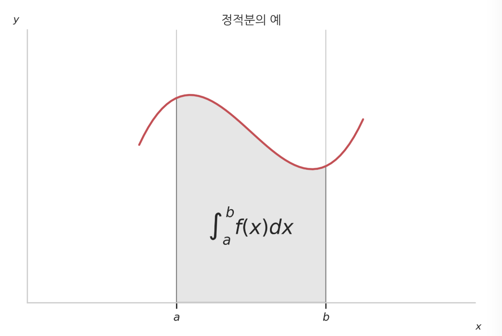
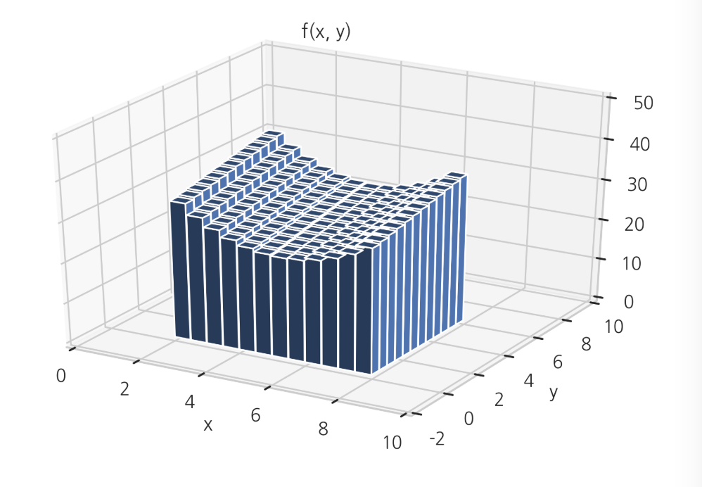

적분
Summary
- 적분(intergral)은 미분과 반대되는 개념이다. 적분에는 부정적분(indefinite integral)과 정적분(definite integral)이 있다.
- 부정적분은 도함수에 대한 미분되기 전의 원래 함수를 찾는 과정이다.
- 정적분은 독립변수 x가 어떤 구간 [a, b]사이일 때 그 구간에서 함수 의 값과 수평선(x축)이 이루는 면적을 구하는 것이다.
- 미적분학의 기본 정리
부정적분
부정적분(indefinite integral)은 정확하게 미분과 반대되는 개념, 즉 반-미분(anti-derivative)이다. 함수 𝑓(𝑥)가 어떤 함수를 미분하여 나온 결과인 도함수라고 가정하고 이 도함수 𝑓(𝑥)에 대한 미분되기 전의 원래의 함수를 찾는 과정(integration), 또는 그 결과(integral)를 말한다.
부정적분으로 찾은 원래의 함수를 표기할 때는 도함수를 대문자화(capitalization)하여 표기할 때도 있지만 다음처럼 기호(integral이라고 읽는다.)로 나타내는 것이 일반적이다. 여기에서 도함수가 이므로 미분하기 전의 함수를 또는 로 쓴다. 는 x라는 변수로 적분했다는 것을 나타내는 기호로 편미분에 대응하는 적분을 표기할 때 필요하다
는 상수항을 뜻한다. 상수항은 미분하면 0이 되므로 부정적분은 무한 개의 해가 있다. 는 너무 당연하므로 생략하고 쓰는 경우도 있다.
편미분의 부정적분
편미분을 한 도함수에서 원래의 함수를 찾을 수도 있다. 다음 식은 𝑓(𝑥,𝑦)가 원래의 함수를 어떻게 미분했는지에 따라 원래의 함수를 표기하는 방법이 달라진다는 것을 나타낸다.
만약 𝑓(𝑥,𝑦)가 함수 (𝑥,𝑦)를 𝑥로 편미분한 함수였다면 이 함수를 찾는 식은 다음과 같다.
주의할 점은 상수항 𝐶(𝑦)가 𝑦의 함수일 수 있다는 점이다. 𝐶(𝑦)는 𝑥없이 𝑦만으로 이루어진 함수를 뜻한다. 𝑦만의 함수는 𝑥로 편미분하면 0이 되기 때문이다. 물론 반드시 𝑦의 함수이어야 하는 것은 아니고 단순한 숫자 상수일 수도 있다.
다차 도함수와 다중적분
미분을 여러번 한 결과로 나온 다차 도함수로부터 원래의 함수를 찾아내려면 여러번 적분을 하는 다중적분(multiple intergration)이 필요하다.
예를 들어 𝑓(𝑥,𝑦)가 함수 (𝑥,𝑦)를 𝑥로 한번 편미분한 후 𝑦로 다시 편미분하여 나온 이차 도함수라고 하자.
이 이차 도함수에서 원래의 함수를 찾으려면 𝑦로 적분한 후 다시 𝑥로 적분해야 한다. 식으로는 다음처럼 나타낸다.
SymPy를 이용한 부정적분
SymPy의 integrate 명령을 사용하면 부정적분을 할 수 있다. 상수항은 반환하지 않는다.
import sympy
sympy.init_printing(use_latex='mathjax')
x = sympy.symbols('x')
f = x * sympy.exp(x) + sympy.exp(x)
f
sympy.integrate(f)
x, y = sympy.symbols('x y')
f = 2 * x + y
f
sympy.integrate(f, x)
정적분
정적분(definite intergral)은 독립변수 가 어떤 구간 [a, b] 사이일 때 그 구간에서 함수 의 값과 수평선(x 축)이 이루는 면적을 구하는 행위(intergration) 혹은 그 값(integral)을 말한다.

정적분은 미분과 아무런 상관이 없어 보이지만 부정적분으로 구한 함수 𝐹(𝑥)를 이용하면 다음처럼 정적분의 값을 구할 수 있다. 이를 미적분학의 기본 정리(Fundamental Theorem of Calculus) 라고 부른다.
정적분은 1)SymPy 등으로 부정적분을 한 뒤 미적분학의 기본 정리를 사용하여 푸는 방법 2) 원래 함수의 면적 부분을 실제로 잘게 쪼개어 면적을 근사하게 구하는 수치적분(numerical integration) 이렇게 두가지 방법으로 구할 수 있다.
예시 )
x, y = sympy.symbols('x y')
f = x ** 3 - 3 * x ** 2 + x + 6
f
1) 부정 적분 방법으로 미분하기 전의 함수를 구한다.
# 부정 적분
F = sympy.integrate(f)
F
2) 구해진 미분하기 전의 함수에 정적분 구간을 넣어 값을 계산한다. 심볼릭 함수의 변수에 실제 숫자를 넣어서 함수의 값을 계산하려면 subs, evalf메서드를 사용한다.
(F.subs(x, 2) - F.subs(x, 0)).evalf()
수치적분
수치적분(numerical integration)은 함수를 아주 작은 구간으로 나누어 실제 면적을 계산함으로써 정적분의 값을 구하는 방법이다.
Scipy의 integrate 서브패키지의 quad 명령으로 수치적분을 할 수 있다.
def f(x):
return x ** 3 - 3 * x ** 2 + x + 6
sp.integrate.quad(f, 0, 2) # 정적분 (수치적분)
수치적분 결과값의 두번째 숫자는 오차의 상한값을 뜻한다. 수치적분으로 구한 값과 정적분으로 구한 값이 같다는 것을 알 수 있다.
다변수 정적분
입력 변수가 2개인 2차원 함수 𝑓(𝑥,𝑦)의 경우에는 정적분을 다양한 방법으로 정의할 수 있다.
두 변수로 모두 적분하는 것은 다음과 같이 2차원 평면에서 주어진 사각형 영역 아래의 부피를 구하는 것과 같다.
다음 함수는 𝑥=2에서 𝑥=8까지, 그리고 𝑦=0에서 𝑦=6까지의 정사각형 영역에서 정적분으로 함수의 부피를 구하는 모습을 시각화한 것이다.

수치이중적분을 하려면 Scipy의 integrate 서브패키지의 dblquad 명령을 사용한다. 함수 사용법은 다음과 같다.
dblquad(func, a, b, gfun, hfun)
a, b은 x의 하한(lower bound)과 상한(upper bound)이고 gfun, hfun은 y의 하한과 상한이다. gfun, hfun은 x의 함수이어야 한다.
예를 들어 다음 정적분을 계산하려면,
def f(x, y):
return np.exp(-x * y) / y**2
sp.integrate.dblquad(f, 1, np.inf, lambda x: 0, lambda x: np.inf)
다차원 함수의 단일 정적분
2차원 함수이지만 이중적분을 하지 않고 단일 정적분을 하는 경우도 있다. 이 때는 하나의 변수만 진짜 변수로 보고 나머지 하나는 상수라고 간주하는 경우이다.
예를 들어 에서 변수 𝑥x 만 진짜 입력 변수로 보고 𝑦y는 단순히 정해지지 않은 상수로 보면 이 함수는 다음과 같은 1차원 함수이다.
𝑦의 앞에 쉼표(, comma)가 아니라 세미콜론(; semicolon)을 써서 𝑦가 변수가 아니라는 점을 강조하였다.